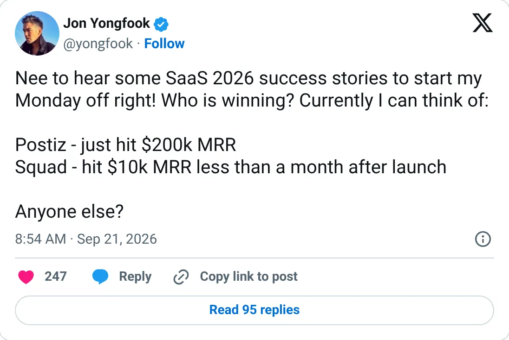
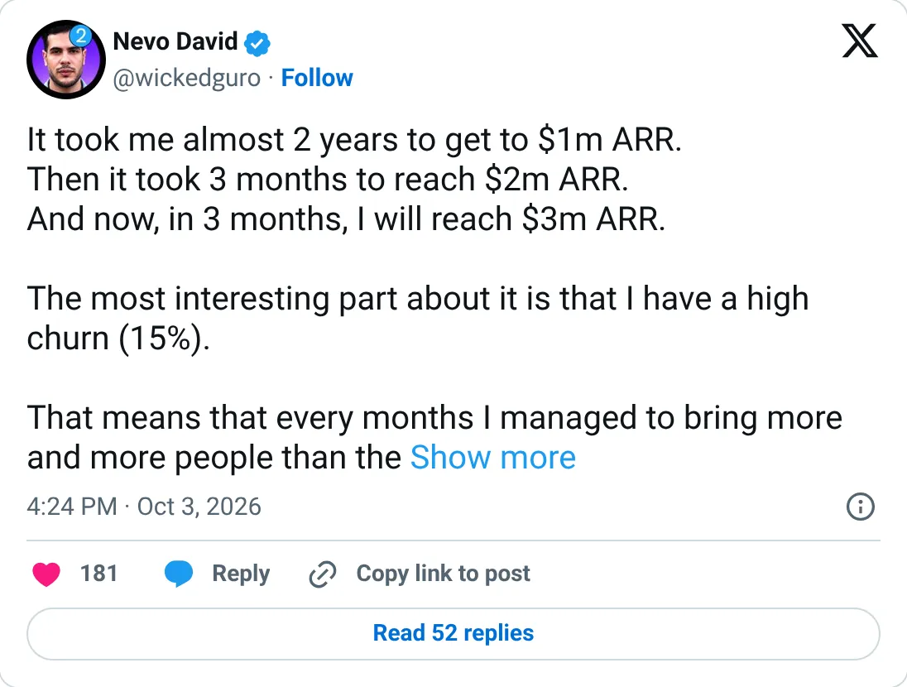

Real, don't clone
Postiz
Social scheduling at $250k MRR on Stripe. The slot is full.
$250,460 MRR
Should you build this
Postiz schedules posts across a lot of networks. Stripe says $250,460 MRR and 7,325 subscriptions. The 'we’ll hit $3M ARR next week' line is just that MRR, said with a drumroll. Post Bridge is a smaller verified scheduler at about $49k. Two funded-by-customers products already sit on the job. A new scheduler needs a network or a user they are bad at, not a landing page.
Cited from the captured posts, shown below: the earliest captured post (Sep 21, 2026) is the source for “"Postiz just hit $200K MRR" (via @yongfook)”; the latest milestone (Oct 3, 2026) is the source for “~2 yrs to $1M ARR, 3 months to $2M, expects $3M ARR next week”.
Posts this is based on

"Postiz just hit $200K MRR" (via @yongfook)
Open on X

~2 yrs to $1M ARR, 3 months to $2M, expects $3M ARR next week
Open on X
What the product is
Open-source, agent-friendly social media scheduler: plan, post and analyze content across 20+ networks.